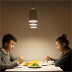

以LED照明代替日光，科学家在南极成功种植蔬菜

科学家们基于水栽培法，使用可重复使用的水循环与营养系统， 同时，以LED照明代替日光，并仔细监控室内的二氧化碳。
德国位于南极的诺伊迈尔三号站(Neumayer Station III)的科学家， 于室外温度低于-20°C的条件下，在高科技温室(EDEN-ISS)成功种出了无需泥土、 日光及农药的蔬菜，包括3.6公斤色拉生菜、18条黄瓜和70颗小萝卜。
告别价格战！专利成为LED企业竞争“核武器”
随着中国经济发展进入新常态，经济发展动力越来越依赖创新驱动， 知识产权保护和创新驱动在经济发展中，其重要性正被逐渐凸显出来。
首个室内LED光信息传输系统地方标准出台
为规范室内LED光信息传输系统的技术要求，深圳市市场监督管理局 公开发布了深圳市标准化指导性技术文件《室内LED光信息传输系统通用技术要求》。
2018年4月4日，为规范室内LED光信息传输系统的技术要求，深圳市 场监督管理局公开发布了深圳市标准化指导性技术文件《室内LED光信息传输系统通用技术要求》。